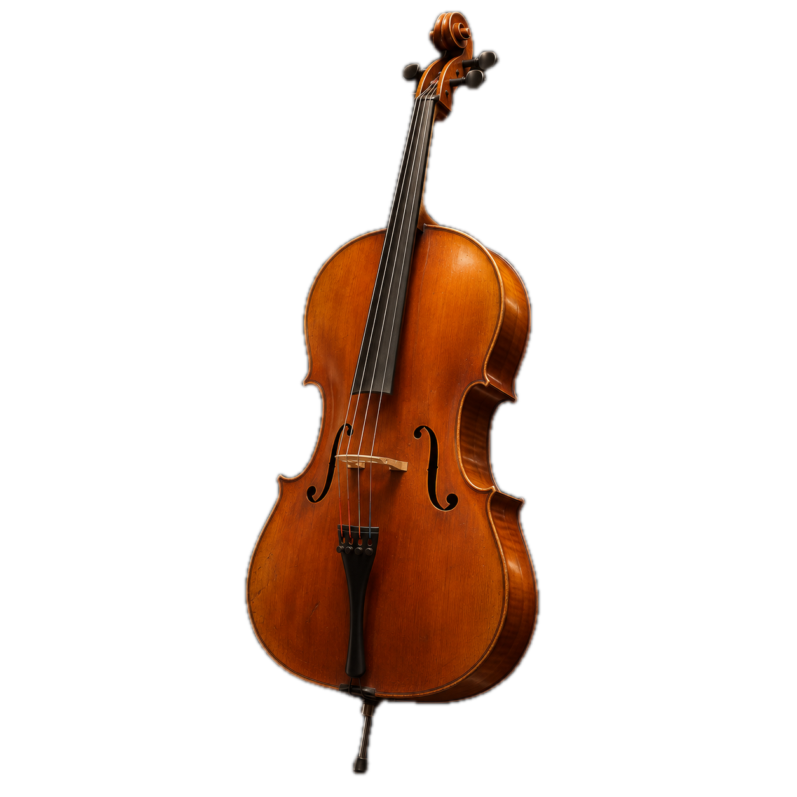

曾经的理想
12岁之前，大提琴几乎占满了我的时间。我曾经想成为一名职业大提琴演奏家，也想考进音乐附中。
后来，我发现自己的能力和当时的条件还不足以支撑这条路。同时，我也找到了更想做的事，于是放下了这个目标。
我发现，自己更喜欢创造一些东西，让别人感到幸福。现在，我想走向工业设计和产品设计。


12岁之前，大提琴几乎占满了我的时间。我曾经想成为一名职业大提琴演奏家，也想考进音乐附中。
后来，我发现自己的能力和当时的条件还不足以支撑这条路。同时，我也找到了更想做的事，于是放下了这个目标。
我发现，自己更喜欢创造一些东西，让别人感到幸福。现在，我想走向工业设计和产品设计。